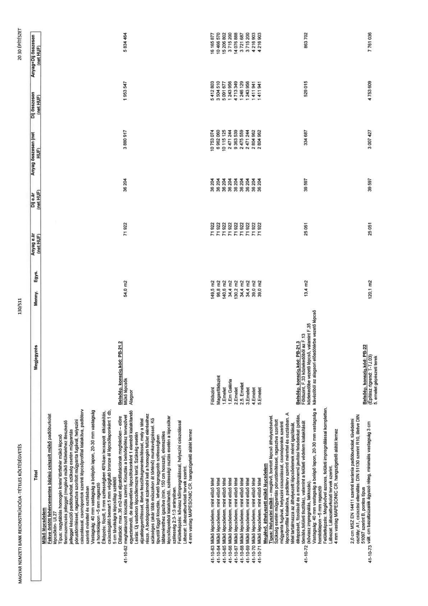

| Tétel | Megjegyzés | Menny. | Egys. | Anyag e.ár (net HUF) | Díj e.ár (net HUF) | Anyag összesen (net HUF) | Díj összesen (net HUF) | Anyag+Díj összesen (net HUF) |
|---|---|---|---|---|---|---|---|---|
| 41-10-62 Műkő lépcsőelem Fekve öntött fehércementes bázisú csiszolt műkő padlóburkolat lépcsőkön- UL.27 Típus: nagytáblás homogén krém/ törtfehér műkő lépcső finomszemcsés jelleggel (meglévő műkő felületekhez illeszkedő jelleggel készülő padlóburkolat, szükség esetén műgyantás pórustömítéssel, ragasztva szorított műgyanta fugával, helyszíni csiszolással, csomópontok szerinti lépcsőprofillal kialakítva, padlóterv szerinti mérettel és osztásban Vastagság: 40 mm vastagság a belépőn lapon, 20-30 mm vastagság a homloklapon ~5 mm ragasztó Élképzés: fózolt, 5 mm szélességben 45%-ban lecsapott élkialakítás, csúszásgátló bemart 5 mm végigfutó bronz él lépcsőlaponként 1 db, 5 cm távolságra lépcsőlap szélétől Dilatáció: max.36 m2-ként aljzatdilatációknak megfelelően – előre meghatározott kiosztás szerint. Kiosztás a belsőépítész tervezővel egyeztetendő, de alapvetően lépcsőfokonként 1 elemből kialakítandó Leírás: Új vasbeton lépcsőlemezre kerül. Szükség esetén aljzatkiegyenlítéssel, illetve feszültségmentesítéssel, mely a tétel része. A bedolgozásnál számolni kell a homogén felület eléréséhez szükséges (akár több műszakon át történő) munkavégzéssel. Kő típustól függő kiosztás, lehető legnagyobb szélességben táblamérethez igazítva (min. 150 cm hosszal), elemszéles lépcsőlapokból kialakítandó, szélességi osztás esetén a lépcsőkar szélesség 2:3-1:3 arányában. Felületképzés: kőviasz kőimpregnálással, helyszíni csiszolással Lábazat: Lábazatburkolati tervek szerint. 4 mm vastag MAPESONIC CR hangszigetelő alátét lemez | Belsőép. konszig. kód: PB-21.2 Műkő lépcsők Alagsor | 54,0 | m2 | 71 922 | 36 204 | 3 880 917 | 1 953 547 | 5 834 464 |
| 41-10-63 Műkő lépcsőelem, mint előző tétel | Földszint | 149,5 | m2 | 71 922 | 36 204 | 10 753 074 | 5 412 803 | 16 165 877 |
| 41-10-64 Műkő lépcsőelem, mint előző tétel | Magasföldszint | 96,8 | m2 | 71 922 | 36 204 | 6 962 060 | 3 504 510 | 10 466 570 |
| 41-10-65 Műkő lépcsőelem, mint előző tétel | 1.Emelet | 140,6 | m2 | 71 922 | 36 204 | 10 115 125 | 5 091 677 | 15 206 802 |
| 41-10-66 Műkő lépcsőelem, mint előző tétel | 1.Em Galéria | 34,4 | m2 | 71 922 | 36 204 | 2 471 244 | 1 243 956 | 3 715 200 |
| 41-10-67 Műkő lépcsőelem, mint előző tétel | 2.Emelet | 130,2 | m2 | 71 922 | 36 204 | 9 363 539 | 4 713 349 | 14 076 888 |
| 41-10-68 Műkő lépcsőelem, mint előző tétel | 2.5. Emelet | 34,4 | m2 | 71 922 | 36 204 | 2 475 559 | 1 246 129 | 3 721 687 |
| 41-10-69 Műkő lépcsőelem, mint előző tétel | 3.Emelet | 34,4 | m2 | 71 922 | 36 204 | 2 471 244 | 1 243 956 | 3 715 200 |
| 41-10-70 Műkő lépcsőelem, mint előző tétel | 4.Emelet | 39,0 | m2 | 71 922 | 36 204 | 2 804 962 | 1 411 941 | 4 216 903 |
| 41-10-71 Műkő lépcsőelem, mint előző tétel | 5.Emelet | 39,0 | m2 | 71 922 | 36 204 | 2 804 962 | 1 411 941 | 4 216 903 |
| 41-10-72 Meglévő, áthelyezett műkő lépcsőelem Típus: Helyszíni műkő – meglévő, bontott lépcső áthelyezésével. Szükség esetén műgyantás pórustömítéssel, ragasztva szorított műgyanta fugával, helyszíni csiszolással, csomópontok szerinti lépcsőprofillal kialakítva, padlóterv szerinti mérettel és osztásban. A tétel tartalmazza az áthelyezett lépcsőelemek méret igazítását, élképzését, fózolását és a mindennemű javítási feladatokat (pótlás, tömítés, felületi tisztítás), valamint a felületi védelem kialakítását (kőviasz impregnálás, lakkozás). Vastagság: 40 mm vastagság a belépő lapon, 20-30 mm vastagság a homloklapon ~5 mm ragasztó Felületképzés: Meglévővel azonos, felületi impregnálással kompletten. Lábazat: Lábazatburkolati tervek szerint. 4 mm vastag MAPESONIC CR hangszigetelő alátét lemez | Belsőép. konszig. kód: PB-21.3 Földszint, F.33 közlekedőből az F.13 közlekedőbe vezető lépcső, valamint F.35 kávézóból az alagsori előadótérbe vezető lépcső | 13,4 | m2 | 25 051 | 39 597 | 334 687 | 529 015 | 863 702 |
| 41-10-73 2,0 cm MSZ EN 14411 szerinti kerámia padlóburkolat, tűvédelmi osztály: A1, csúszási ellenállás: DIN 51130 szerint R10, illetve DIN 51097 szerint B, pontos típus 51097 vált. cm bazaltzúzalék ágyazó réteg. minimális vastagság 3 cm | Belsőép. konszig. kód: PB-22 (Építész rtrend: T-TJ.03) 5. emelet gépészeti terek | 120,1 | m2 | 25 051 | 39 597 | 3 007 427 | 4 753 609 | 7 761 036 |
